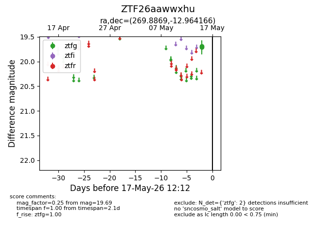
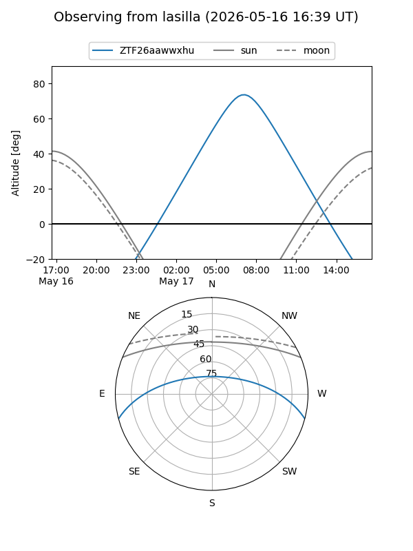
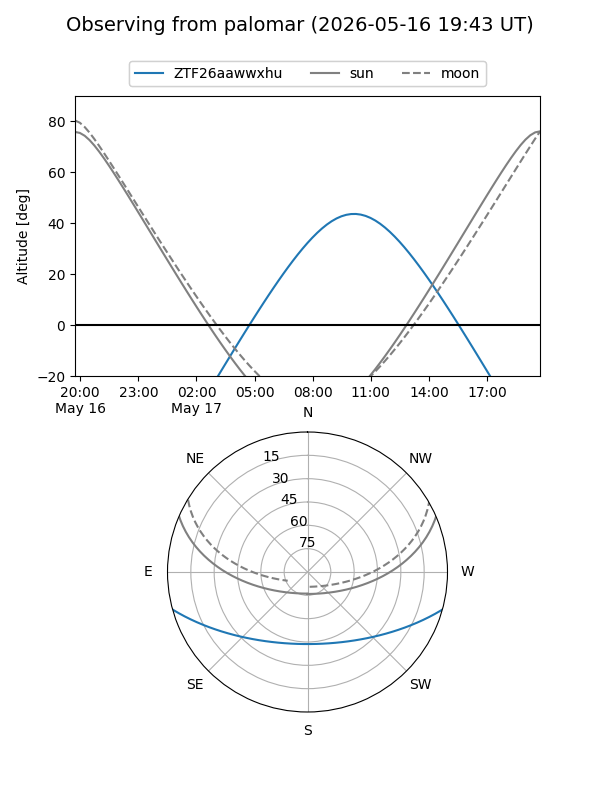

ZTF26aawwxhu
Target ZTF26aawwxhu at 2026-05-17 12:14
Aliases and brokers:
FINK: link
Lasair: link
ALeRCE: link
alt names
ZTF26aawwxhu (ztf,fink_ztf)
Coordinates:
equatorial (ra, dec) = 269.8869,-12.96417
equatorial (HMS+DMS) = 17:59:32.85,-12:57:51.00
galactic (l, b) = (15.4323,+5.30172)
Flags:
Photometry:
last ztfg=19.69
2 ztfg detections
Lightcurve

Visibility


Additional plots